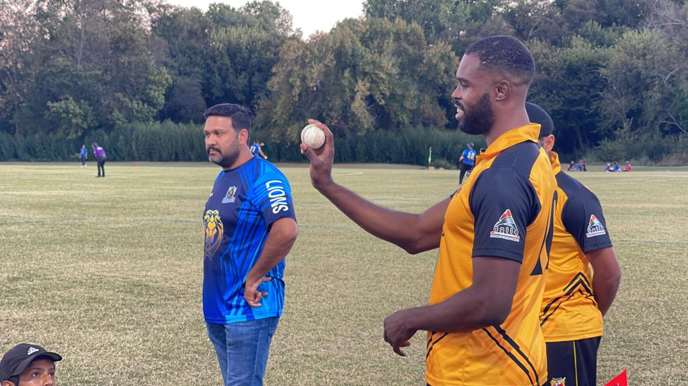
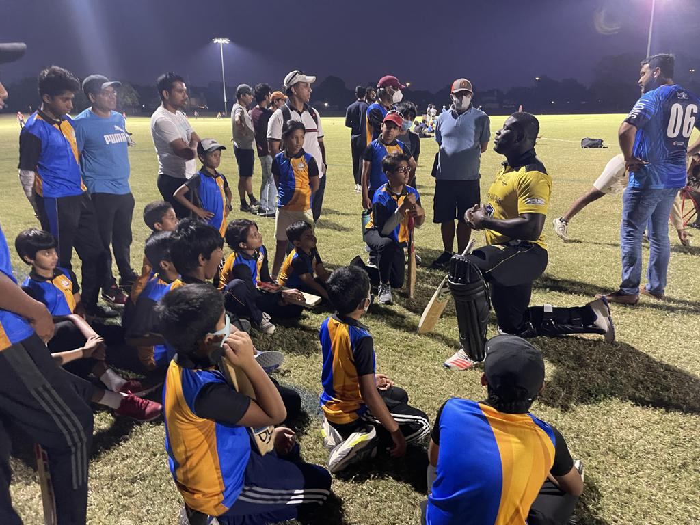
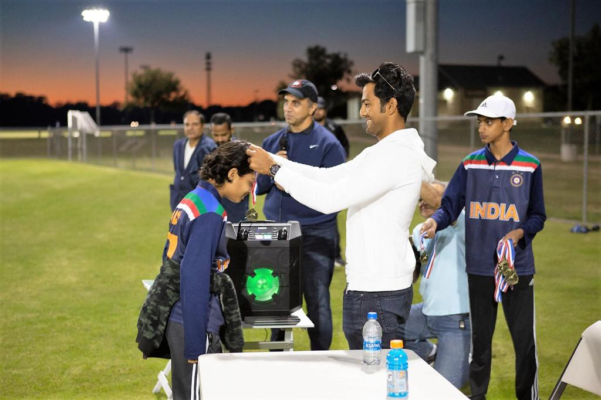
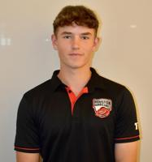
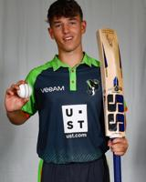
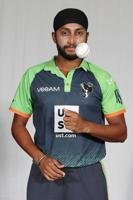
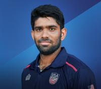

WCI Academy turns young cricket enthusiasts into high-performance talents — guided by world-class coaches, backed by USA Cricket, and powered by Gary Kirsten Cricket & CoachED.
Founded in 2021 by Level-4 Elite Coach Alok Singh, WCI Academy provides a positive, healthy environment where young players flourish and excel. We're a registered youth academy of USA Cricket — recognized by the ICC and USOC.
Whichever age-group you play in, players don't just improve skills and temperament — they build a winning mindset, leadership, and the confidence to succeed on and off the field, and find friends for life.
In 2025 we partnered with Super Kings Academy — the official youth academy of IPL's Chennai Super Kings — to open a world-class High-Performance Center in Austin.


Mentored & guided by the World-Cup and IPL-winning coach. Our coaches are CoachED-certified from Level-2 to Level-4 Elite.
We use CoachED's AI tools to evaluate every player's performance and recommend personalized drills inside their Individual Development Plan.
A strategic partnership with CSK's official youth academy powers our Austin High-Performance Center — indoor lanes & premium turf.

MiLC Player-Coach
MLC / MiLC Player-CoachThe World-Cup & IPL-winning coach mentors and guides the academy, and led a webinar on parenting in cricket for WCI families.


Guest leadership & mentorship sessions have also featured Brian Lara and Julia Price (USA Women's head coach).
Come to a free tryout and meet the team that's taken Austin's youth to the national stage.
Book a Free Tryout →